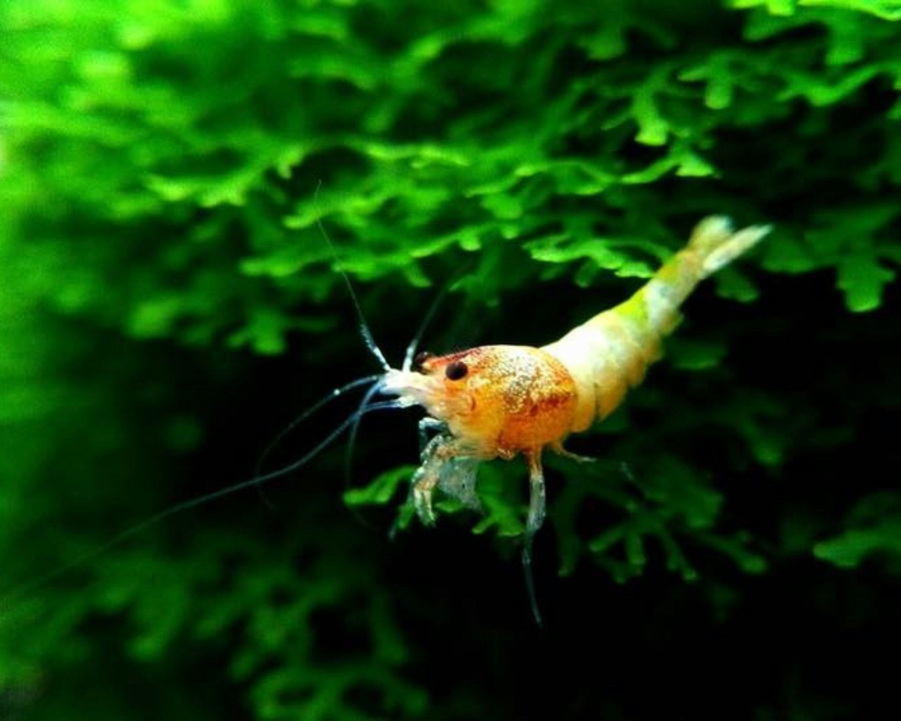
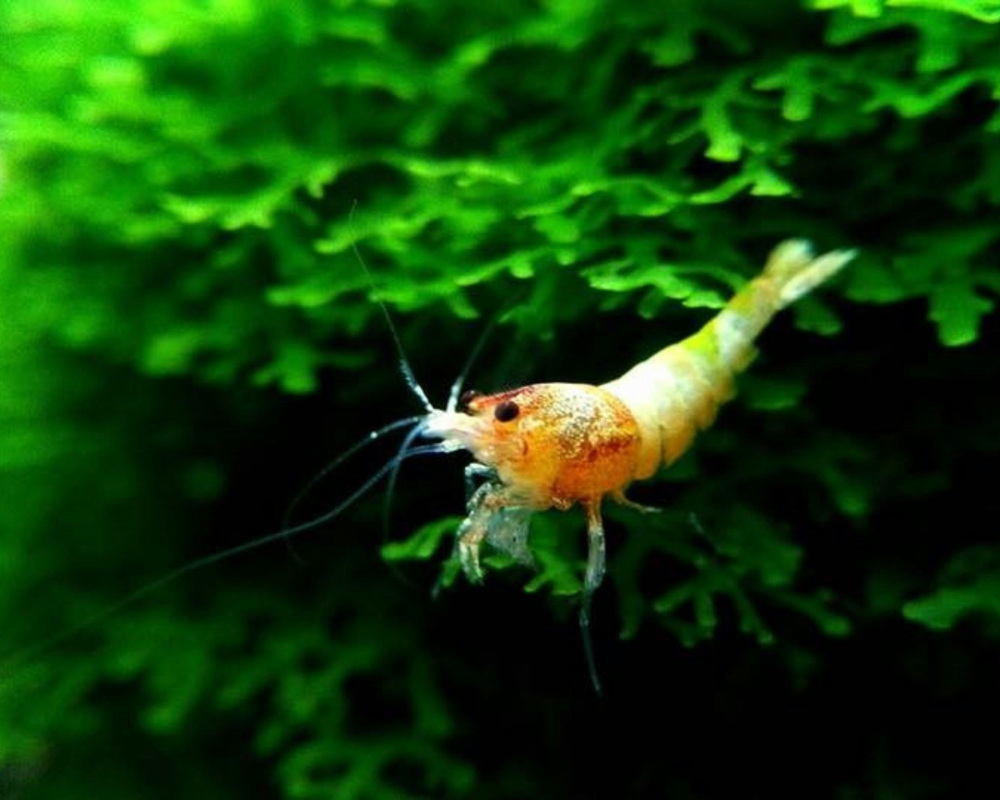
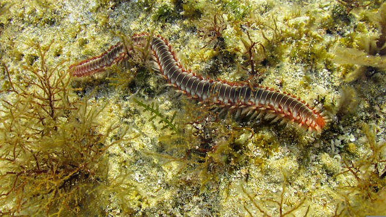
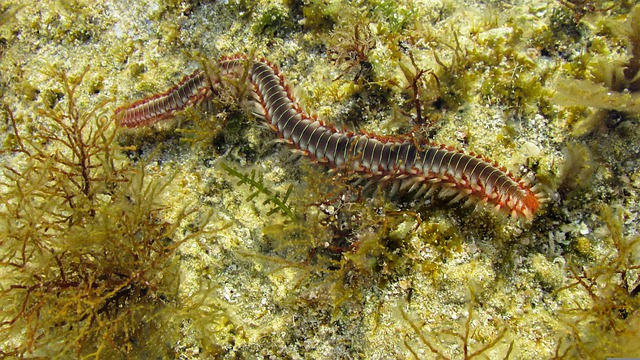

越前がにとは


「越前がに」とは福井県の漁港に水揚げされる雄のズワイガニのことです。 ズワイガニは十脚目ケセンガニ科のカニで、水深200～300ｍほどの深海に生息するカニです。
◇各地で異なる呼ばれ方
日本海で水揚げされるズワイガニは、同じ種類のカニでありながら、水揚げされる地域によって異なるブランド名と特徴を持っています。
たとえば、山形県では「芳がに（よしがに）」、石川県では「加能がに（かのうがに）」、福井県では「越前がに」、そして山陰地方では「松葉がに」と呼ばれています。
それぞれのブランドは、地域ごとの厳格な品質基準や漁獲方法に基づいており、各地で特有の味や風味が楽しめます。
◇福井のブランド
ズワイガニ
その中でも、越前がには日本で初めてカニにブランド認証タグをつけたブランドズワイガニとして有名です。
越前がにミュージアムのある越前町は小型底引き網船を40隻以上保有する、 福井県最大の港「越前漁港」を有し、水揚量は県内随一となっております。
越前がにの生態
ズワイガニは十脚目ケセンガニ科のカニで深海に生息する大型のカニです。 日本では山口県以東の日本海と茨城県以東の北太平洋に生息し、世界的にも広く分布しています。
◇ズワイガニのすみかと
越前海岸
ズワイガニは水深50 - 1,200mの砂泥底に生息し、水深200 - 600mの深海と水温0 - 3℃の水域を好みます。
越前海岸沿岸は急深で、カニの生息水域である水深250～400ｍまで、一気に深くなります。また海底の地形が100ｍ～150ｍ～200m～と段々畑のようになっていることで、カニや魚にとって生息しやすい地形となっています。
冬の海水の冷たさもカニにとって住みやすい要因の一つで、福井の厳しい冬がズワイガニにとって良い環境を作っています。
◇ズワイガニのたべものと
越前海岸
ズワイガニは雑食性であり、貝類や多毛類（ゴカイ類）などを捕食するほか、海底に落ちた魚介類、海洋性哺乳類などの屍骸、自分自身の殻も食べます。
カニの漁場となる越前沖は暖流と寒流のぶつかる海域で、栄養素が豊富な冷たい水と表層の温かい水が複雑に混ざることで、植物プランクトンが豊富になり、小魚、甘えびなどにも恵まれた漁場となり、エサが豊富なのが特徴です。エサを沢山食べるためかカニも立派に育ちます。
 

 

◇ズワイガニが生まれ
育つまで
カニの産卵期は初産だと6 - 7月、経産だと2 - 4月に産卵します。産卵された卵は、メスガニの腹節の内面にある腹肢に付着して抱卵され、1年から1年半経過すると、孵化してプレゾエア（幼生）となり放出されます。放出後、短期間で再び産卵するため成熟したメスは長期間、卵を抱いています。
放出された幼生は100日から120日で稚ガニとなり、親になるまでに約10年もの時間を要します。
しかしズワイガニ深は深海域に生息するため、脱皮、季節移動、寿命など生態の解明はあまり進んでいません。実はまだまだ謎だらけの不思議な生き物です。
越前がにの歴史
越前におけるズワイガニ漁の歴史は国内で最も古いといわれ、「越前がに」という名称が出てくる最も古い記録は、1511年、室町時代に京都に住んでいた三条西実隆の日記に「越前蟹」という表現で見ることができます。
この頃、もうすでに越前の国（現在の福井県）ではズワイガニが漁獲され、京都にも運ばれていたことが推測されます。 全国で唯一の皇室献上ガニでもあり、その歴史は古く、明治43年12月に越前町(旧四ヶ浦町)で獲れた越前がにを皇室に献上したという記録が残っています。